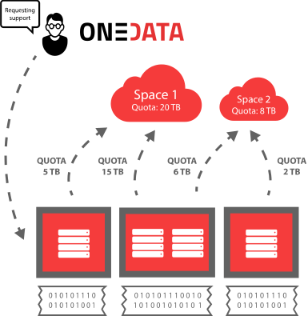
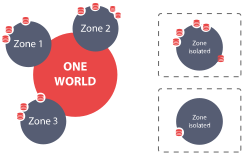
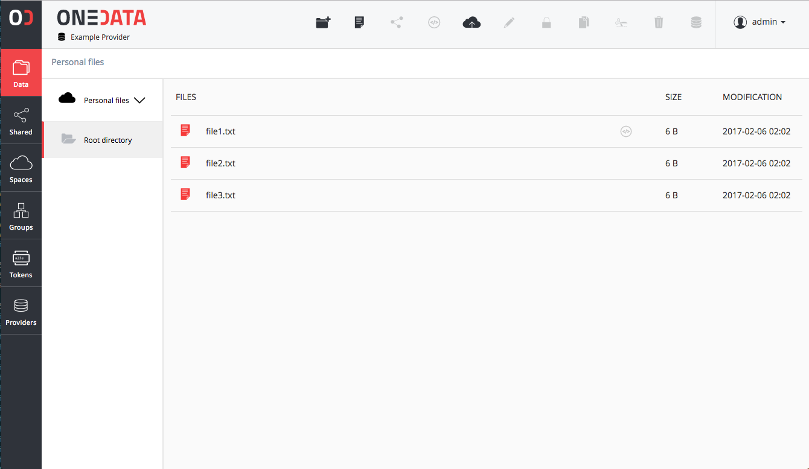

What is Onedata?
With Onedata, users can access, store, process and publish data using global data storage backed by computing centers and storage providers worldwide.
Onedata focuses on instant, transparent access to distributed data sets, without unnecessary staging and migration, allowing access to the data directly from your local computer or worker node.
Before you start using Onedata, it's helpful to understand what functionality it provides, how data is organized and what are the various components of the platform.
Basic concepts
The most important concepts of the platform to understand at the beginning include:
- Spaces - distributed virtual volumes, where users can organize their data
- Providers - entities who support user spaces with actual storage resources exposed via Oneprovider services
- Zones - federations of providers, which enable creation of closed or interconnected communities, managed by Onezone services.
Spaces
All data stored in Onedata is organized into Spaces. Spaces can be seen as virtual directories or volumes, which can contain an arbitrary directory and file hierarchy, while being distributed across multiple storage providers. Each space has to be supported by at least one provider, which means that this provider reserved certain storage quota for this particular space. In case a space is supported by more providers, the total quota is the sum of storage space provisioned by all providers supporting it.
After registering in a specific zone using Onezone web interface, a new space has to be created. Onedata is not a storage provider, and it does not provide any free or paid storage resources. That is why, the newly created space has a quota size set to 0. In order to be able to use this space, you have to request storage from some provider.
You can do that by sending to the provider a unique support request token, which can be generated using the Onezone interface. Provider uses this token to easily enable support for your space with a specified quota. The actual storage size and provisioning time depends on your agreement with the storage provider. You can request more storage for your space from multiple geographically distributed providers. Onedata will unify access to these storage resources automatically.

Each user can have any number of spaces. Spaces can be easily shared with other users and even exposed to the public. If you want to create a space for a community of users, Onedata supports user groups, which enable multiple users to access single space with respect to specified authorization rules.
Data in spaces can be managed through a web interface as well as from command-line. Each space can be easily mounted to a local filesystem and accessed directly from a laptop, a cluster node or virtual machine deployed in the cloud.
For more information about Spaces and Groups see Space Management and Group Management.
Providers
Each zone is composed of a network of providers who provision their storage resources to users. Anyone can become a Onedata provider by installing Oneprovider service, attaching storage resources and registering it in a particular Onezone service.
A user can use several providers simultaneously to manage his/her data. Onedata exposes combined storage space of all providers to the user and ensures that access to user's data is instant and transparent.

Providers deploy Oneprovider services near physical storage resources, i.e. in computing and data centers or even personal computers. Providers have full control over which users can use their storage resources and in what amount.
Users use Onezone web interfaces (like the one at onedata.org) in order to authenticate with Onedata and access the data located on the providers storage resources.
For more information about Onedata's provider service, check out Oneprovider Overview documentation.
Zones
Onedata is a distributed system divided into zones that are created by deploying a dedicated service called Onezone. Any organization, community or user group can deploy their own Onezone service with customized login page and either connect it to the distributed network of Onezone services or run it as an isolated private deployment.
Onezone is responsible for authentication and authorization of users and makes it possible for users from different zones to communicate with each other and share data. It allows providers from different zones to interact with each other, i.e., allowing users from different zones to get support for their spaces regardless of the zone in which the particular provider is located.

As onedata.org is a main public zone, any provider registered there allows the users to access their data through onedata.org user interface.
For more information about Onedata's Onezone service, check out Onezone Overview documentation.
User interfaces
Onedata provides 4 ways to manage and access your data:
User web interface

The Onedata Web Interface provides a web-based, graphical user interface that you can use to manage your spaces, control access rights and manage your user account.
User command-line interface
If you prefer to work from the terminal, Onedata provides the oneclient command-line tool, which allows you to mount your spaces in a Linux filesystem and access your data directly from console. See the oneclient reference for the complete list of available features.
Administrator web interface
Dedicated web interface for installation and management of Oneprovider and Onezone services.
API
Currently Onedata exposes a CDMI (Cloud Data Management Interface) interface and RESTful interface for integration with other services, which allows developers to directly access and manage spaces, groups, authorization rights and data.